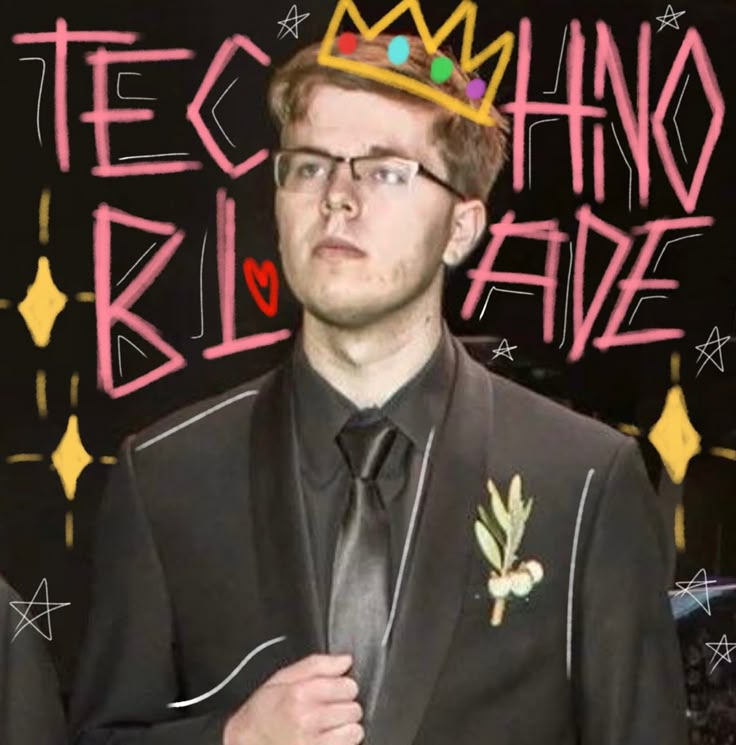
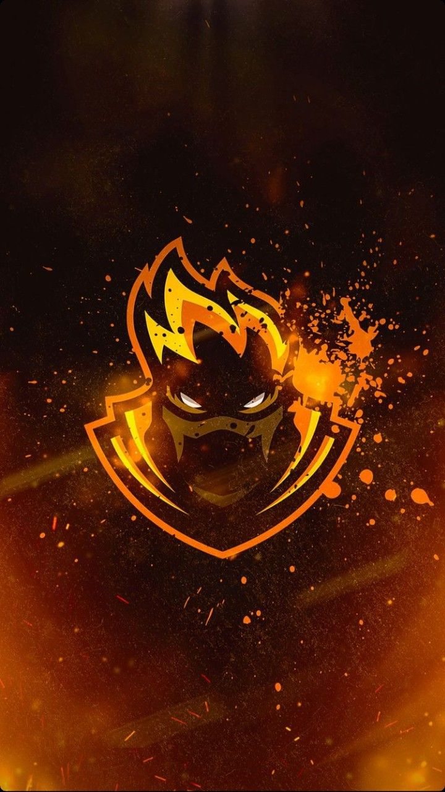
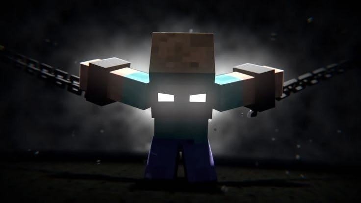

MINECRAFT
STORY 01
Technoblade
Remembering the Minecraft legend known for extraordinary skill, sharp humor, and an unforgettable impact on the community.
READ STORY →Discover the journeys, mysteries, and memories behind the names that shaped gaming history.
EXPLORE STORIESEvery name has a past. Every legend leaves a mark. Explore their stories below.

MINECRAFTRemembering the Minecraft legend known for extraordinary skill, sharp humor, and an unforgettable impact on the community.
READ STORY →
FREE FIREExplore the name, the gameplay, and the memories associated with a legend featured in this gaming archive.
READ STORY →
MYSTERYDiscover the mysterious figure behind one of Minecraft's most famous community legends and its lasting fascination.
READ STORY →Technoblade became one of Minecraft's most recognizable creators through his exceptional gameplay, competitive spirit, and distinctive humor. His videos brought together skill, entertainment, and memorable moments.
Even after his passing in 2022, his influence continues through the community, the memories he created, and the fans who keep his legacy alive.
↑ BACK TO STORIESEvery gaming name has a journey made of moments, challenges, and experiences. This part of the archive is dedicated to collecting the story and memories connected to BlackN444.
As the archive grows, more details, achievements, images, and important moments can be added to preserve this story for the community.
↑ BACK TO STORIESHerobrine is a famous Minecraft community legend often described as a mysterious figure appearing in strange and unexplained situations.
Although Herobrine belongs to Minecraft folklore rather than the official game, stories, fan art, and videos have kept the mystery alive for years. The legend shows how imagination can become part of a game's culture.
↑ BACK TO STORIESExplore legendary moments, famous players and unforgettable stories from Minecraft and Free Fire.
Herobrine first appeared in a mysterious story shared by a player around 2010, describing a strange figure with white eyes in Minecraft. The legend spread across forums and videos, turning him into one of the greatest mysteries in Minecraft history. Despite countless stories, there is no reliable evidence that Herobrine was ever an official part of Minecraft.
Black became known for his incredible skills in Free Fire, especially his accuracy and headshot mechanics. In one of his most memorable moments, he eliminated an entire squad using a Mini Uzi, showcasing impressive reflexes and aim control. His incredible play demonstrated why he is remembered by fans as a skilled Free Fire player.
In Technoblade's final video, his father read a farewell message written by Technoblade himself for his fans. In the message, he thanked everyone for their support and expressed how much the community meant to him. His final words touched millions of people, leaving an unforgettable legacy in Minecraft history.
The confrontation between BlackN444 and Turzin became memorable for its incredible speed and intensity, with BlackN444 dominating the match. The action was so fast that there was barely time to catch a breath. It was an impressive moment that captured the excitement and competitive spirit of Free Fire.
Technoblade inspired millions of players with his talent, humor, and dedication to Minecraft. Even after his passing, his achievements continue to encourage new players to keep improving and never give up. His legacy will live on in the community, proving that a true legend is never forgotten.